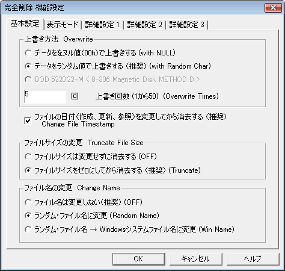

| 機能設定 ： 基本設定 |
|
| 機能設定 ： 基本設定 |
|

ファイルの内容をどのように塗り消すかを指定します。「ヌル値で上書き」はすべてゼロ（数字のゼロでなく、文字コードのゼロ）で上書きします。「ランダム値で上書き」は乱数で上書きします。どちらも、ファイルのすべての領域に対して行われます。
 通常は「ランダム値」です。
通常は「ランダム値」です。
ディスク表面の磁気記録は、前回の（削除してしまいたいデータ）磁化領域が若干残っていますので、１回上書き消去しただけでは高性能な解析をされた場合に記録を断片的に回復できる場合があります。そのためには、ランダム値で何回か上書きすることで対抗することができます。
データ領域全体を上書き（消去）する回数を指定します。合衆国政府仕様（DOD
5220.22-M）にあわせ２回としていますが、より高い安全性が必要な場合にのみこの値を増やしてください。
 通常は2回。
通常は2回。
Ver 1.36beta より 5回を標準としています
 通常はＯＮで使用
通常はＯＮで使用
ファイルサイズを「ゼロ」として、アロケーション・テーブルへのポインタをゼロにします。また、ファイル・サイズの推測も防ぎます。
 通常は「ゼロにする」を選択してください。
通常は「ゼロにする」を選択してください。
ファイル名は、ランダムに決定されます。現在のファイル名の文字数と同数のランダム文字の名前に変更されます。
たとえば「This is LFN file.txt」は「sHuIDulPLPnctJSu.cYS」とファイル名を変更し、ファイル名の解析を不可能にします。「Windowsファイル名に似せる」は、「This
is LFN file.txt」は「sHuIDulPLPnctJSu.cYS」と変更し、さらに「JAVAPRXY.OCX」と変更します。
なお、Windowsのファイルシステムでは、ファイル名変更は「新しいファイルエントリを作る」→「旧ファイルエントリを削除済みにする」という処理をしているため、「ファイル名の変更」では旧ファイル名を完全に消去できません。ファイル名を消去したい場合は、「その他の設定」の「ダミーファイル削除痕跡による復活妨害」を使用してください。
 通常は「ランダムファイル名に変更」
通常は「ランダムファイル名に変更」